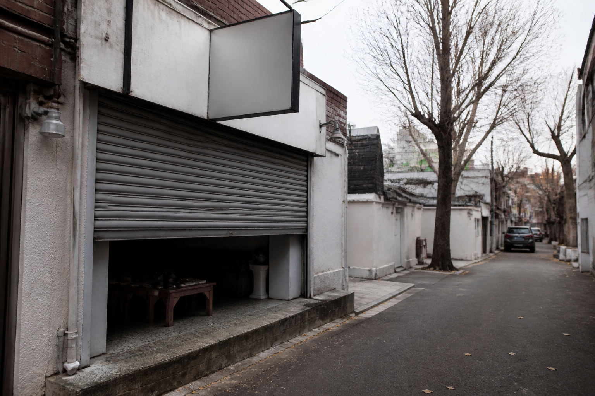

가게를 닫기로 했다면, 마지막 손님에게 알리는 3주 — 오늘부터 폐업 지원이 달라졌습니다
11월 27일부터 소상공인 보호법 개정분이 시행돼 폐업 지원에 점포 철거, 경영·법률·세무 컨설팅, 심리 상담이 새로 들어갔습니다. 폐업을 앞둔 가게가 마지막 3주에 정리할 순서와, 단골을 남기는 공지 방법을 쉬운 말로 정리했습니다.

가게 문을 닫는 날, 그 사실을 모르는 사람이 가장 많습니다. 단골은 다음 주에 왔다가 셔터를 보고 돌아섭니다. 그 손님은 다시 오지 않고, "그 집 없어졌대"라고만 기억합니다.
소상공인 보호법 개정분의 효력이 오늘부터 시작됩니다. 폐업하는 사장님을 돕는 항목이 늘었습니다. 다만 이 글에서 더 중요한 것은 닫기로 한 뒤의 3주를 어떻게 쓰느냐입니다. 서류는 순서가 있고, 손님에게 알리는 일에는 때가 있습니다.
1. 오늘부터 달라진 것#
법률 제21702호(2026년 5월 26일 공포)의 개정분이 오늘부터 효력을 갖습니다. 폐업 소상공인을 위한 지원에 세 가지가 더해집니다.
- 점포 철거
- 경영·법률·세무 관련 컨설팅
- 심리 상담과 회복 프로그램
여기에 지원 정보를 한곳에 모아 보여 주는 온라인 플랫폼을 만드는 근거도 생겼습니다.
여기서 선을 그어야 합니다. 오늘 생긴 것은 "폐업도 지원 대상"이라는 법적 근거입니다. 얼마를, 어떻게 신청하는지는 시행령과 공고가 나와야 정해집니다. 그래서 "폐업하면 얼마 받는다"는 말은 아직 할 수 없습니다. 지금 할 수 있는 것은 서류를 챙기고 순서를 정해 두는 일입니다.
2. 닫기 전에 새는 돈 네 가지#
폐업은 매출이 0이 되는 일이지만, 0이 되기 전에 돈이 새는 구멍이 있습니다.
보증금에서 먼저 빠지는 돈. 계약서의 원상복구 조항을 확인하지 않은 채 신고부터 하면, 임대인이 수리비를 보증금에서 먼저 공제합니다. 어디까지가 원상복구인지는 계약서에 적힌 만큼입니다.
다음 달에도 나오는 보험료. 직원이 있는 가게는 4대보험 상실 신고일과 마지막 급여 정산일이 어긋나면, 그다음 달 보험료가 그대로 부과됩니다. 돌려받으려면 따로 절차를 밟아야 합니다.
받지 못하는 미수금. 사업자등록을 정리한 뒤에는 거래처에 돈을 청구할 근거가 약해집니다. 거래명세서와 세금계산서는 정리 전에 모아 두세요.
남지 않는 단골. 이게 가장 큽니다. 마감을 알리지 않으면 손님은 사라지고, 가게를 넘기거나 다시 시작할 때 그 손님이 없습니다.
| 해야 할 일 | 먼저 확인할 것 |
|---|---|
| 임대차 정리 | 계약서의 원상복구·해지 조항, 공제 항목 |
| 직원 정리 | 4대보험 상실 신고일, 퇴직급여 정산 |
| 세무 정리 | 홈택스 폐업 신고, 부가세 신고 잔여분 |
| 증명서 | 폐업사실증명 (지원금·보증금·상환유예에 모두 필요) |
| 거래처 | 미수금, 납품 계약 종료 통보 |
| 손님 | 마감일 공지, 채널 상태 정리 |
임대차와 직원 정리는 신고보다 앞입니다. 신고를 먼저 하면 협의에서 불리해지는 경우가 있고, 정산이 꼬이면 되돌리는 데 시간이 더 듭니다.
3. 3주 달력 — 노티스랩이 같이 정리하는 것#
폐업을 결심한 날부터 문을 닫는 날까지, 남은 3주를 이렇게 나눠 보세요. 노티스랩은 이 달력에서 손님에게 닿는 부분을 맡습니다. 새로 찍지 않고, 이미 있는 사진과 리뷰, 지난 글만 씁니다.
D-21 (3주 전) — 마감일을 정합니다. "12월 15일까지 합니다"처럼 날짜를 정해야 공지가 됩니다. 이 날짜가 정해지면 나머지는 순서대로 굴러갑니다.
D-14 (2주 전) — 손님이 보는 세 곳을 바꿉니다. 가게 앞 안내문, 지도 앱 공지, 카톡 채널 메시지. 이 세 곳이면 단골의 눈에 닿습니다. 카톡 채널 공지는 방을 나가지 않아도 한 번에 전달됩니다. 여기에 다음 자리를 한 줄 붙이세요. "이 동네 다른 가게", "온라인으로 계속", "다시 열면 알려 드리겠다" 중 하나입니다. 이 한 줄이 있어야 손님이 마지막에 한 번 더 옵니다.
D-7 (일주일 전) — 남길 것만 한 폴더에. 사진 원본, 손님이 쓴 리뷰, 블로그 글, 카톡 자동 답변. 지도 앱의 영업시간과 예약 링크는 내려서 헛걸음을 막습니다. 이 폴더는 나중에 가게를 넘기거나 다시 차릴 때 첫 자재가 됩니다. 서류에 없는 다섯 가지는 가게를 넘길 때 지도와 리뷰는 누구의 것인가에 정리해 두었습니다.
D-3 — 마지막 손님에게 한 번 더. 카톡 채널로 짧게 한 번 더 보냅니다. "이번 주 금요일까지입니다. 와 주셔서 고맙습니다." 길게 쓰지 않아도 됩니다.
4. 결정 전에 숫자 한 번#
폐업을 아직 확정하지 않았다면, 닫기 전에 매출이 어디서 새는지 한 번만 확인해 보세요. 광고비를 끊었을 때 줄어드는 매출과, 채널 하나가 멈췄을 때 남는 손님. 두 숫자를 나란히 놓으면 결정이 달라지는 경우가 있습니다.
첫 문의#
가게 정리 중이거나 마감 인사를 아직 못 정하셨다면, 지금 쓰는 채널과 마감일만 카카오톡 채널 (새 탭에서 열림)로 보내 주세요. 남은 사진으로 공지 한 편과 남길 것 목록부터 짜 드립니다.
주의할 점#
오늘 효력이 생긴 것은 지원의 근거입니다. 신청 창구는 시행령과 공고가 나온 뒤에 열리고, 금액과 대상도 그때 확정됩니다. 폐업 신고, 보험 정산, 원상복구 같은 일은 세무·법률 판단이 섞이는 자리입니다. 금액이 큰 계약이라면 전문가와 한 번 상의하시길 권합니다. 이 글은 법률·세무 자문이 아닙니다.
참고로, 중소기업중앙회의 '2026 폐업 소상공인 경영실태조사'를 인용한 자료에서는 폐업 소상공인의 평균 부채가 8,192만 원, 지원제도를 활용한 비율이 26.9%로 나왔습니다. 활용하지 않은 이유 1위는 "지원 내용을 몰랐다"(53.7%)였습니다. 제도는 있는데 닿지 않았다는 뜻입니다.
확인한 자료#
- 「소상공인 보호 및 지원에 관한 법률」 일부개정법률(법률 제21702호, 2026.5.26 공포, 2026.11.27 시행) 개정이유 — 국가법령정보센터 시행 법령 목록
- 중소기업중앙회 '2026 폐업 소상공인 경영실태조사' 인용 — 한국중소상공인협회 입장문(2026년 11월 26일) https://www.gungsireong.com/news/articleView.html?idxno=55402 (새 탭에서 열림)
자주 묻는 질문#
오늘부터 폐업 지원금을 신청할 수 있나요?#
아직 아닙니다. 오늘은 법적 근거가 생긴 날입니다. 시행령과 공고가 나온 뒤에 신청이 열리고, 금액과 대상도 그때 확정됩니다.
폐업 신고를 먼저 하면 안 되나요?#
임대차 계약서의 해지·원상복구 조항을 먼저 확인하세요. 신고를 먼저 하면 보증금 정산에서 불리해질 수 있습니다. 직원이 있으면 상실 신고일과 급여 정산일도 함께 맞춰야 다음 달 보험료가 새지 않습니다.
폐업하면 리뷰와 블로그는 없어지나요?#
남습니다. 다만 지도 앱의 영업 상태와 시간은 직접 정리해야 합니다. 사진·리뷰·글은 이후 가게를 넘기거나 다시 시작할 때 쓰이는 자산이므로, 계정 권한과 원본을 미리 챙겨 두세요.
KEEP READING
이어서 읽기
같은 흐름에서 이어지는 글입니다. 지금 매장에 해당하는 지점부터 읽으시면 됩니다.

가게를 넘길 때 지도와 리뷰는 누구의 것이 됩니까 — 서류에 없는 다섯 가지
폐업 결심에서 사업자등록 말소까지 중간값 12개월. 그사이 지도·리뷰·예약 이력은 주인 없이 흩어집니다. 양도·폐업 전에 확인할 다섯 가지.

26일부터 대형마트 온라인 배송이 멈춥니다 — 이번 주 동네 가게가 놓치는 손님
홈플러스가 상품 수급 차질로 2026년 11월 26일부터 온라인 배송을 중단합니다. 신선식품 납품률은 10% 아래로 떨어졌고, 예약 주문은 자동 취소·전액 환불됩니다. 손님의 장보기 동선이 바뀌는 이번 주, 동네 가게가 확인해야 할 세 가지를 정리했습니다.